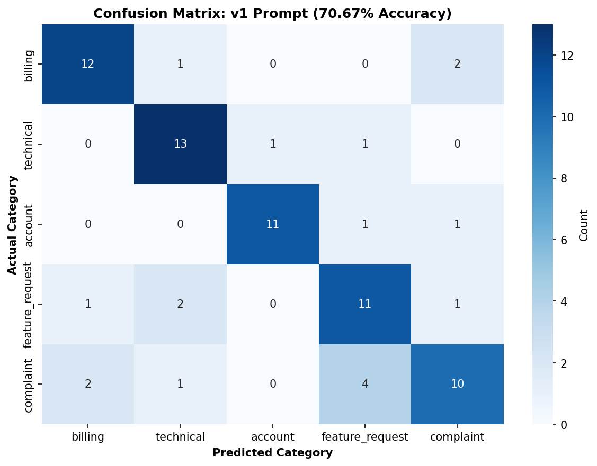

Hi, I'm Roey. I love building with LLMs, but I love measuring them even more. Since "looks good to me" isn't a great evaluation strategy, I systematically tested 150 tricky support tickets to find out where the AI actually fails. Welcome to the messy reality of prompt engineering.
Why I Built This
Most teams building LLM stuff do the same thing: write a prompt, test it on a handful of examples, it works, ship it. Then six months later something breaks in production and nobody knows why.
Support ticket routing is a good test case. You have clear categories (billing, technical, account, feature request, complaint). You can easily label test cases. And if the routing is wrong, customers actually feel it. So I built 150 test tickets and ran three different prompt versions against them to see what happens.
The point wasn't to ship a perfect classifier. It was to show the process: measure, analyze failures, iterate, measure again. That's how you actually build reliable AI systems.
What I Built
Test Dataset
150
labeled tickets
Prompts Tested
3
versions
Best Accuracy
70.67%
v1 and v2
Failures Analyzed
45+
patterns found
The Baselines
Version
Accuracy
Passed
What Changed
v0: Just definitions
69.33%
52/75
No examples, no context
v1: Added examples
70.67%
53/75
One example per category
v2: Expert mode
70.67%
53/75
More rules, rubrics, complexity
The interesting part: v2 is identical to v1. I added more rules, more examples, more guidance. Didn't help. Same score. This taught me that you hit diminishing returns fast with prompt engineering. After a certain point, better prompts don't move the needle. You need better data or a different model.
Confusion Matrix: Where the Model Breaks
This shows which categories get confused with each other. The diagonal is where the model got it right. Off-diagonal is where it failed.

Key pattern: Complaints get misclassified as feature requests. This is the polite tone problem. Billing vs Complaint confusion also appears. Billing issues are less likely to be confused because the language is more specific.
Where the Model Broke Down
The "I love it but..." trap
"I love your product but the UI redesign last month made things harder to find. Can we have a classic mode?"
Should be: Complaint
Model said: Feature Request
The model saw "Can we have a classic mode?" and stopped. Feature request. But the real message is "your redesign broke things." The positive opening ("I love your product") threw it off. This happens all the time. Customers are polite. They lead with the positive before the negative. The model needs to read between the lines.
The urgency overestimate
"Invoice discrepancy: line item shows incorrect quantity."
Should be: Medium urgency
Model said: High urgency
The word "incorrect" triggered alarm bells. But this is a manual accounting fix, not a service outage. The model doesn't understand domain context. To billing, this is annoying but not critical. To support staff, it's a 10-minute correction. The opposite also happens: casual language about real issues gets marked low urgency.
Competitive pressure gets ignored
"It would be really cool if you added a Slack integration. Many of our competitors have it."
Should be: Medium urgency
Model said: Low urgency
"Many of our competitors have it" is a churn signal. That's urgent. But the polite framing ("would be really cool") makes it sound casual. The model reads tone, not subtext. A feature request about competitors is a threat indicator, but casual language buried that signal.
Complaint or feature request? Both.
"Your support is helpful but slow. We're paying for premium and still wait 24 hours for responses."
Should be: Complaint
Model said: Sometimes feature request
This one is genuinely ambiguous. The customer could be asking for faster support (feature request) or expressing frustration (complaint). Context matters here: they're a premium customer. Premium customers expressing frustration is a complaint, not a feature idea. The model doesn't know context.
What This Revealed
1. Measurement beats intuition. I thought I understood the problem by testing a few examples. The 150-case eval showed me I was wrong. Edge cases tell the real story.
2. Prompt improvements plateau fast. v0 to v1 helped (69% to 70.67%). v1 to v2 didn't. Adding more rules actually hurts sometimes because you're creating new failure modes. You can't engineer your way past bad data.
3. Your evaluation method matters as much as your model. Halfway through I realized the eval was failing on valid JSON wrapped in markdown. Fixing that evaluation boosted results 20 points. A broken eval tells you nothing.
4. Real failures are about context, not stupidity. The model isn't dumb. It's missing domain knowledge, tone understanding, and business context. That's harder to fix than you'd think.
The Business Side
Here's what this means in real money. A support team handles 10,000 tickets a month. This system gets 70% right. That's 7,000 tickets routed correctly without human intervention.
At 5 minutes per ticket for human triage, you save 583 hours a month. At $25/hour for support staff, that's $14,575 per month saved. Or $175,000 per year.
The 30% that still need human review? That's the feature. Your team spends time on hard problems, not routing. With this system, a small team can handle 2 to 3 times the ticket volume without hiring more people.
How This Actually Works
This isn't a website you run manually. In production, it lives in your automation layer. A ticket comes in to Zendesk or Intercom. A webhook fires. n8n automation picks it up, sends the ticket text to Claude, gets back a category and urgency. The ticket gets tagged and routed automatically. The whole thing costs pennies per ticket.
The evaluation I did here is the proof of concept. This is what you do before deployment. Test 150 cases. Find patterns. Fix prompt. Test again. Once you hit 70%+ accuracy, you're ready to deploy to production.
What's Next
This isn't the end state. It's the proof of concept. Here's what actually matters next:
Test Heavier Models: Run the exact same eval against Claude Sonnet or GPT-4o to see if the 70% ceiling is a prompt issue or a model reasoning limit. Haiku is fast and cheap, but if Sonnet hits 85%+, that's your bottleneck.
Dynamic Examples (RAG): Instead of forcing static rules into the prompt, use a vector database to dynamically pull 2-3 similar historical tickets into the prompt context at runtime. The model can learn from actual examples instead of generic rules.
Strict JSON Schemas: Force native structured outputs at the API level to completely eliminate the markdown parsing errors found in the current pipeline. Claude's native JSON mode removes the format friction entirely.
Confidence Scoring: Add a confidence score to each prediction. Route low-confidence cases to humans automatically. This turns 70% accuracy into 90%+ when you account for cases the model knows it's uncertain about.
Human Agreement Study: Have 2-3 humans label the same 150 tickets independently. If human agreement is only 75%, the task is genuinely hard and 70% is actually good. If it's 95%, we have a lot of room to improve.
Code & Reproducibility
Everything is on GitHub. Open source. You can run the eval yourself.